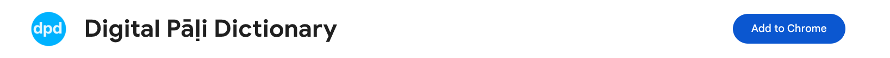
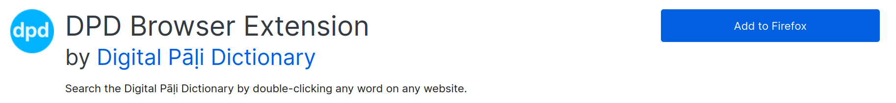
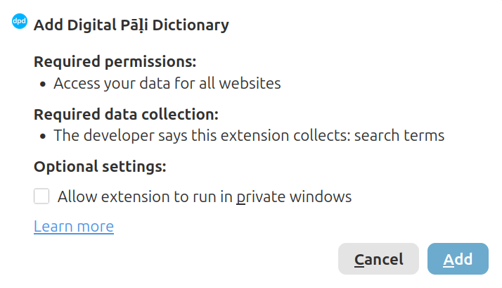

Установка расширения DPD для браузера
Расширение DPD для браузера добавляет боковую панель словаря в ваш браузер. Дважды щелкните по любому палийскому слову на веб-странице, и определение появится мгновенно — без копирования и переключения вкладок.
Оно работает как в Google Chrome, так и в Mozilla Firefox.
Установка
Chrome
(1) Откройте страницу DPD в интернет-магазине Chrome.
(2) Нажмите Установить.

(3) Нажмите Установить расширение во всплывающем окне.


Firefox
(1) Откройте страницу DPD на Firefox Add-ons.
(2) Нажмите Добавить в Firefox.

(3) Нажмите Добавить во всплывающем окне.

Закрепление расширения
Закрепление добавляет значок DPD на панель инструментов, чтобы вы могли включать расширение одним щелчком мыши.
Chrome
(1) Нажмите на значок пазла в правом верхнем углу браузера.
(2) Найдите Digital Pāḷi Dictionary в списке.
(3) Нажмите на значок булавки рядом с ним.


Firefox
(1) Нажмите на значок пазла на панели инструментов Firefox.
(2) Нажмите на значок шестеренки рядом с Digital Pāḷi Dictionary.
(3) Выберите Закрепить на панели инструментов.


Включение и выключение
Нажмите на значок DPD на панели инструментов, чтобы включить или выключить расширение для текущего веб-сайта.
- Когда значок синий, расширение включено.


- Когда значок серый, расширение выключено.


Расширение запоминает ваш выбор для каждого веб-сайта отдельно.
Сайты, на которых расширение включается автоматически
На следующих веб-сайтах расширение включается автоматически без нажатия на значок:
- SuttaCentral
- Digital Pāli Reader
- The Buddha's Words
- tipitaka.org
- tipitaka.lk
- tipitaka.paauksociety.org
Вы по-прежнему можете отключить его на любом из этих сайтов, нажав на значок DPD.
Поиск слова
Существует три способа поиска слова.
Двойной щелчок
Дважды щелкните по любому палийскому слову на веб-странице.


Выделение и перетаскивание
Нажмите и перетащите, чтобы выбрать слово или короткую фразу, затем отпустите. Это полезно для поиска составных слов или фраз из двух слов.


Ввод в строке поиска
Введите слово непосредственно в строку поиска в верхней части панели и нажмите Enter или кнопку поиска.


Вельтхейс в Юникод
Если у вас не установлена палийская клавиатура, вы можете печатать, используя простые комбинации букв. Они преобразуются в Юникод автоматически.
| Velthuis | > | Unicode |
|---|---|---|
| aa | > | ā |
| ii | > | ī |
| uu | > | ū |
| "n | > | ṅ |
| ~n | > | ñ |
| .t | > | ṭ |
| .d | > | ḍ |
| .n | > | ṇ |
| .m | > | ṃ |
| .l | > | ḷ |
| .h | > | ḥ |
Например, ввод ni.t.thaa превращается в niṭṭhā.
Навигация по истории поиска
Каждое слово, которое вы ищете, сохраняется в истории сеанса. Используйте кнопки Назад и Вперед в заголовке панели для перемещения по предыдущим поискам без повторного ввода.


Изменение размера панели
Потяните за левый край панели, чтобы сделать ее шире или уже.
Тема
Расширение автоматически подстраивается под цветовую схему веб-сайта, на котором вы находитесь. Чтобы установить ее вручную, нажмите на значок палитры в заголовке панели.


Тема сохраняется для каждого веб-сайта.
Настройки
Нажмите на значок шестеренки в заголовке панели, чтобы открыть настройки.


Размер шрифта
Нажмите – или +, чтобы уменьшить или увеличить размер текста в панели.
Ниггахита ṃ / ṁ
Выберите предпочтительное представление 41-й буквы палийского алфавита — ṃ (точка внизу) или ṁ (точка вверху).
Грамматика Скрыта / Раскрыта
Когда включено, раздел грамматики открывается по умолчанию для каждого нового найденного слова.
Примеры Скрыты / Раскрыты
Когда включено, раздел примеров предложений открывается по умолчанию для каждого нового найденного слова.
По одному разделу за раз
Когда включено, открытие одного раздела автоматически закрывает любой другой открытый раздел. Когда выключено, несколько разделов могут оставаться открытыми одновременно.
Сводка Скрыть / Показать
Сводка — это краткий обзор результатов, отображаемый в верхней части панели. Переключите, чтобы скрыть или показать ее.
Сандхи ' Скрыть / Показать
DPD отмечает места соединения сандхи апострофом ', например vat'amhi. Переключите, чтобы показать или скрыть маркеры апострофа.
Аудио Мужской / Женский
Выберите мужской или женский голос для произношения аудио.
Использовать GoldenDict
Когда включено, двойной щелчок по слову открывает его непосредственно в GoldenDict вместо боковой панели.
Это очень удобная функция. Обычно для поиска слова в GoldenDict нужно скопировать слово и нажать Ctrl+C+C — с этой настройкой достаточно одного двойного щелчка на любой веб-странице.
Расширение также автоматически переключается на GoldenDict, если вы находитесь в автономном режиме (оффлайн).
Свернуть панель
Сворачивает панель в тонкую полоску у правого края экрана. Нажмите на стрелку на полоске, чтобы снова развернуть ее.


Как пользоваться
Нажмите на кнопку ⓘ info в заголовке панели в любое время, чтобы увидеть краткое руководство по использованию расширения.


Обратная связь
Возникли проблемы? Хотите предложить функцию? Нажмите на ссылку внизу страницы, чтобы открыть форму обратной связи.